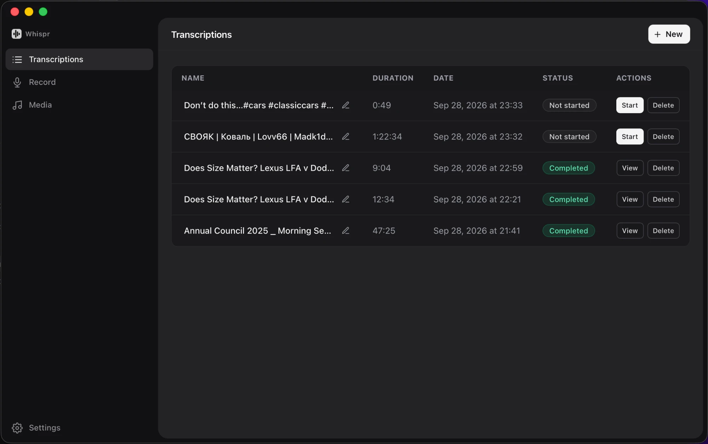

Video and audio to text. Right on your Mac.
Paste a link or drop a file. Whispr transcribes it offline with whisper.cpp — no account, no API key, nothing leaves your Mac.

Private by default
Transcription runs on your Mac with whisper.cpp. Local files never touch the internet.
Just the part you need
Paste a YouTube link or drop a file, preview it, and transcribe 40 minutes of a 4-hour video.
Follow along, then export
Playback highlights each line as it's spoken. Save as TXT, SRT subtitles, PDF or Word.
Opening Whispr the first time
Whispr isn't notarized by Apple yet, so macOS asks before opening it. Drag it to Applications, then right-click Whispr and choose Open. You only need to do this once.
Download for Mac